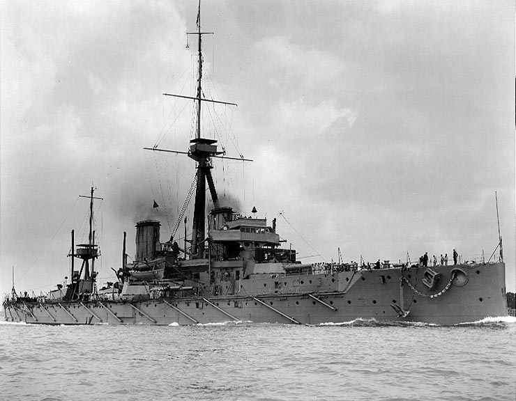

艦これ: 戦艦・比叡のお墓に行ってきたった。
公開日：
@subsfn 氏、Y 氏、O 氏とともに 西伊豆でのんびりしてきた。 - だるろぐ を満喫したが、修善寺でお別れ。密かに計画を立てていたもう一つの目的を果たすため、伊豆箱根鉄道は踊り子号に乗り込み、三島方面へ進路をとる。踊り子号に乗ったのはこれが初めてだけど、三島までは特急料金不要。そこから先、JR 線内では特急料金がいるというシステムのようだ。伊豆箱根鉄道は太っ腹だな！
さて、今回建てた極秘計画というのは、実は戦艦・比叡のお墓（鎮魂碑）に参ることだった。前回の那珂ちゃんに続く聖地巡礼だな。
横須賀の光心寺というお寺にあるらしい。最初はひとりで行くつもりだったが、Y 氏がこの計画に興味をもってくれたらしく、同行することになった。まずは踊り子号のなかで予習した、比叡の一生を振り返ってみたいと思う。
戦艦ドレッドノートの登場と“超弩級”建艦競争
時は今から遡ること約100年。イギリスが一隻の革命的な戦艦を建造した。それが「ドレッドノート（HMS Dreadnought）」。

彼女のなにが“革命的”だったのか。それにはまず当時の海戦がどのようなものだったかを振り返る必要がある。
日本海海戦（1905年）までの海戦というのは、各砲がまちまちに照準を合わせ、めいめいに発射する“独立撃ち方”という方法が取られていた。しかし、これでは着弾してもどの砲からの発射であるか特定しにくく、照準の再修正が困難だ。
そのため、日本海軍はまず初弾を発射し、その結果を艦橋で一元的に把握して照準を再計算、それを各砲に伝えて一斉射（あとは、その繰り返し）するという戦術を採用。戦艦の数では上回るバルチック艦隊を、開戦からたった30分間でほとんど“消滅”させた。
それをみた（まぁ、みる前から英国でも研究が進められていたのだが）イギリス海軍卿ジョン・アーバスノット・フィッシャー提督はこう考えた。「一斉射撃前提の戦艦を作ったほうがよくね？」戦艦の艦砲というのは、だいたい口径に応じて飛距離と威力が決まるわけで、一元照準・一斉射撃を行うならば同一の大口径で主砲を統一した方がいい。なんとか相手よりも早く初弾命中を得れば、あとは照準を同調させた主砲の一斉射撃で相手をボコれる。
この着想を実現したのがドレッドノート。起工は1905年10月2日、進水が1906年2月10日、就役が1906年12月2日とのことなので、日本海海戦直後に建造が開始され、1年後には実戦配備されたことになる。
では、“革命的”と言われた彼女のの設計は具体的にどのようなものであったのか。当時の日本が建造中であった最新鋭艦・薩摩とドレッドノートを較べてみよう。
薩摩は両舷に主砲をまんべんなく配置している。これにより、12インチ砲×2＋10インチ砲×3の片舷火力が利用できる。
一方、ドレッドノートは両舷の主砲はワンセット。大小まちまちな副砲の類もなるべく削って、中心線上への主砲配置を基本とする。片舷火力は12インチ砲×4で、一見「薩摩よりも砲が少なくて弱くね？」と思ってしまう（所詮「数撃ちゃ当たる」のだから、砲は数が多ければ有利）が、薩摩が威力・飛距離もまちまちな砲撃で数を稼ぐのに対し、ドレッドノートは一度の砲撃で4発の命中弾がキッチリ飛んでくる。これでは勝てない。
ついでに在来のレシプロ蒸気エンジンより小型軽量大出力な新機関・蒸気タービンを搭載。従来の戦艦が18ノット程度の速度なのに対し、21ノットで航行できるため、飛距離の短い小口径の旧式艦ならば距離をとって安全にボコれる。同レベルの火力・飛距離をもった艦と対峙しても、攻めるも逃げるもこっちの思うがまま。また、この頃の戦艦にはまだ搭載されていた衝角も廃止した。衝角というのは、いわば体当たりして敵艦をエグるための設備なわけだけど、ロングレンジでの一斉射撃が前提の彼女には必要がないわけだ。
ドレッドノートの戦力は当時の戦艦の二隻以上に相当すると評価され、当時存在、または建造中であった最新鋭戦艦は一気に陳腐化――前ド級艦（pre-dreadnoughts）――し、旧式艦扱いとなってしまった。
ちなみにドレッドノートには姉妹艦がおらず、一人っ子だったようだ。なので、ドレッドノート級（弩級）戦艦というのはドレッドノートだけ。
巡洋戦艦・金剛級の誕生
「ドレッドノート、やべぇ。薩摩作ってる場合じゃねえ！」と思ったのかどうか、ドレッドノートの“革命”で目を覚ました日本海軍もドレッドノートを超えた新世代戦艦の建造を目論む。それが日本海軍にとっては初の“超弩級戦艦”金剛型だった。
とはいえ、日本海軍には弩級戦艦建造のノウハウなどあろうはずもなく。当時同盟関係を結んでいたイギリスのヴィッカース社に頼んで、一等巡洋艦を一隻発注することになった。これが一番艦・金剛。当時のイギリスは自分たちでは採用をためらうような新しい設計をほかの国の戦艦で試すというのを結構やっており（日本海海戦当時の連合艦隊旗艦・三笠がいい例）、金剛の設計に手抜きはなかったようだ。
それから少し遅れて、金剛の設計を元に国内の造船所で建造されたのが姉妹艦・比叡（横須賀海軍工廠）、榛名（神戸川崎造船所）、霧島（三菱重工長崎造船所）。比叡は組み立てこそ日本で行われたものの、就役を早めるためもあり、部品の大半はヴィッカース社からの購入で賄われた。まぁ、金剛が生粋のブリティッシュガール（？）とすれば、いわば日英のハーフとも言える。
建造当時の比叡。金剛級の特長は
- 36センチ主砲（ドレッドノート？ 12インチ＝30センチしか積んでいない！）
- 約30ノットで航行可能（比叡は建造時の試験で27.7235ノット。ドレッドノート？ 21ノットしか出ない！）
- 巡洋艦の割に充実した装甲（比べるの難しそうだけど建造当時でドレッドノートの4/5ぐらい？）
日本海軍は重装甲の巡洋艦を戦艦代わりに使うという荒業を日本海軍当時から結構やっていたが（※貧乏だから）、金剛級はその延長といえなくない気がする。のちに巡洋戦艦、戦艦にカテゴライズされるが、もともと巡洋艦出身ということもあり、命名規則は巡洋艦のそれに則っている（戦艦には旧国名が付けられるが、金剛型の名前は各地の名山にちなむ）。
第一次改装……のはずが、ひえぇ～！
そして迎えた第一次世界大戦（1914～18年）。なかなかに優秀だった金剛型はイギリスに「4姉妹そろえて貸してくれや！」と頼まれたりするほどだったが、それに応じるはずもなく。比叡は竣工後1ヶ月で東シナ海方面へ出動するも、大きな戦闘を経験することはなかった。一方、海の向こうで世界はユトランド沖海戦を経験。水平方向の防御をもう少し重視しないと、現行の巡洋艦程度の一発で爆沈しちゃうよねということになり、世界中で巡洋戦艦の改装が実施された。
しかし、そのような流れもなんのその。
超弩級戦艦・長門型戦艦を筆頭とする八八艦隊の建造による予算不足により金剛姉妹に改装が施されることはなく、比叡は1919年（大正8年）の北支沿岸警備、1920年（大正9年）のロシア領沿岸警備、1922年（大正11年）の青島・大連警備、セント・ウラジミル警備、1923年（大正12年）の南洋警備・支那沿岸警備、関東大震災救援物資輸送任務といったお仕事を淡々とこなす日々を送る。
呉海軍工廠で第一次改装が着手されたのは、実に第一次世界大戦から10年以上を経た1929年（昭和4年）10月15日だった。
ようやく改装が施されることになった比叡。しかし、そこに湧き上がったのは世界的な軍縮の機運だった。超弩級戦艦の建造競争で疲弊した列強各国は、ロンドン軍縮条約で戦艦の建造枠を取り決め、それを超えた場合は解体などの処置を講ずることを約した。
日本海軍も多すぎる戦艦を減らす必要に迫られたのだが、そのターゲットとなったのが、金剛姉妹のなかでもっとも改装が遅れていた比叡。「ひえぇ～！」
結局、比叡は練習戦艦へと改装されることになり、4番主砲と舷側装甲を撤去。航空兵装、水雷兵装は全廃された。機関も取り替えられ、自慢の快足も18ノットにまで削減。目印でもあった煙突も三本から二本へと減らされ、“お年寄り”と表現されるほどの寂しい姿になってしまった。後の艦長・西田正雄も改装された比叡を見て涙ぐんだという（比叡最後の艦長となる彼については、のちのち触れる）。
御召艦としての華々しい日々
しかし、それも悪いことばかりでもなかった。兵装の一部を取り払ったがゆえに艦内に余裕ができたこと、艦隊に所属しない練習艦であったことからスケジュールに余裕があったことなどの理由から、天皇陛下の座乗艦である“御召艦”の栄誉を三度も担っている。これにともない、展望台などの御召艦専用装備が追加された。
ちなみに御召艦を経験した艦は、帝国海軍史上でも11艦しかないらしい（【艦これ】歴代の観艦式時の御召艦は以下のとおり 他 : あ艦これ ～艦隊これくしょんまとめブログ～、金剛以外の姉妹はみんな一度経験しているが、連合艦隊旗艦を努めたのは金剛だけ）。
- 1890年 海軍観兵式 防護巡洋艦「高千穂」
- 1900年 大演習観艦式 装甲巡洋艦「浅間」
- 1905年 日露戦争凱旋観艦式 装甲巡洋艦「浅間」
- 1908年 大演習観艦式 装甲巡洋艦「浅間」
- 1912年 大演習観艦式 防護巡洋艦「筑摩」
- 1913年 恒例観艦式 練習巡洋艦「香取」
- 1915年 御大礼特別観艦式 巡洋戦艦「筑波」
- 1916年 恒例観艦式 巡洋戦艦「筑波」
- 1919年 御親閲式 装甲巡洋艦「出雲」（第一次大戦の遣欧艦隊に対する閲兵）
- 1919年 大演習観艦式 戦艦「摂津」
- 1927年 大演習観艦式 戦艦「陸奥」
- 1928年 御大礼特別観艦式 戦艦「榛名」
- 1930年 特別大演習観艦式 戦艦「霧島」
- 1933年 大演習観艦式 練習戦艦「比叡」
- 1936年 特別大演習観艦式 練習戦艦「比叡」
- 1940年 紀元二千六百年特別観艦式 戦艦「比叡」
このほかにも昭和天皇の宮崎・鹿児島行幸の際の御召艦、満州国皇帝・愛新覚羅溥儀が訪日した際の御召艦などもつとめ、なかば“天皇陛下の御船”状態になっていたようだ。1936年（昭和11年）2月の二・二六事件では、横須賀鎮守府の井上成美参謀長が米内光政司令官に「万一の場合は陛下を比叡に御乗艦願いましょう」と進言しており、より深刻な事態になった場合は昭和天皇が比叡から指揮を執る事態もありえたという。
御召艦を努めた艦は何週間も前から上陸が禁止され、艦内は隅々まで清掃、ペンキの塗りなおしまで行う徹底ぶりだったというからさぞかし大変だったと思うが、ほかの艦の乗組員に対しては大いに自慢できることであったらしい。まぁ、人生にひとつ誰にでも自慢できる話があれば人間、幸せというもので、十分苦労に見合う報酬だったのではないかと察する。のちの井上成美も生涯で最も愉快な時期を比叡艦長時代とし、海軍省軍務局長時代には御召艦「比叡」の油絵を飾っていたのだそうな。
ちなみに、これは比叡が御召艦を務めた時の記念切手。当時の最新鋭艦・長門、陸奥と並んで国民に愛されたという。
なお、比叡が最後につとめた紀元二千六百年特別観艦式は、帝国海軍にとっても最後の観艦式になった。
条約の失効と近代化改装
1936年（昭和11年）12月末、ロンドン海軍軍縮条約が失効する。それと同時に、比叡は再び戦艦への改装が施された（イギリスはそれにブチぎれたが、日本はガン無視）。ほかの姉妹は1次改装、2次改装を経ていたが、比叡はそれを一度に経験することになる。
まず失われた兵装を取り戻し、機関は艦本式タービンと交換。出力は建造時の二倍となる136,000馬力となり、艦尾を7.6m延長したこともあいまって、速力は29.7ノットにまで向上した。ただし、30ノットには届かなかった。このせいか、艦これでは金剛お姉さま LOVE な比叡だが、姉妹の中ではインテリやくざ霧島（29.8ノット）とコンビを組まされることが多かったようだ。「榛名は、大丈夫です！^^」（金剛30.3ノット、榛名30.5ノット）
また、比叡の改装は大和型戦艦のテストとしての意味もあった。そのため、艦橋は大和型戦艦と似た塔型（筒型）構造を採用しており、ほかの姉妹とは艦影が異なる。それまでの戦艦の艦橋は、太い支柱に指揮所やら電探やらをくっつけた城郭型檣楼（パゴダ式）だったという。
あんまり詳しくないのでよくわかんないけれど、パゴダマストは“航行する違法建築”との呼び声が高い扶桑・山城姉妹の艦橋がわかりやすいのではないかな（http://nabeck.web.fc2.com/huso.htm）。
一方、大和は支柱むき出しじゃなくて、円筒形というか箱形になっている。
こうした改修はなかなかの成功を収めた模様で、海軍も満足したらしい。
“高速戦艦”と呼ばれることもある金剛型姉妹は、30ノット程度で移動する空母機動部隊に随伴可能な足の速さを備えつつ、重巡洋艦を中心とした敵の空母護衛艦の装甲をブチ抜くには十分の火力を備えており、老朽艦ながら非常に使い勝手がよかった。そのため、太平洋戦争ではもっとも多くの戦闘を経験した戦艦となる。
- 1941年（昭和16年）12月8日、真珠湾攻撃を行う南雲機動部隊を護衛
- 1941年（昭和16年）12月24日、日本へ帰還
- 1942年（昭和17年）1月8日、トラック泊地へ向けて出港（ラバウル空襲、ポート・ダーウィン空襲に随伴）
- 1942年（昭和17年）2月8日、霧島とともに南方部隊に編入。2月16日には金剛・榛名とも合流
- 1942年（昭和17年）2月下旬、ジャワ島南方海域を警戒。米軍駆逐艦・エドサルを撃沈
- 1942年（昭和17年）3月11日以降、インド洋へ進出。セイロン沖海戦に参加
- 1942年（昭和17年）4月24日、日本へ帰還
- 1942年（昭和17年）5月29日、日本を出発
- 1942年（昭和17年）6月5日、ミッドウェー海戦に参加するも会敵せず
- 1942年（昭和17年）7月11日、アリューシャン方面の哨戒任務から日本へ帰還
- 1942年（昭和17年）8月16日、トラック島へ向けて日本を出発
- 1942年（昭和17年）8月24日、第二次ソロモン海戦に参加。零式水上観測機1機を空戦で失う
- 1942年（昭和17年）8月28日、トラック泊地に到着
- 1942年（昭和17年）9月10日、ソロモン諸島北東海面に向けてトラック泊地を出撃
- 1942年（昭和17年）9月23日、会敵せずトラック泊地に帰還
- 1942年（昭和17年）10月26日、南太平洋海戦。所属艦隊が空母・ホーネット（USS Hornet, CV-08）を捕捉・撃沈
太平洋戦争開戦直後は金剛型4隻で第三戦隊を編成。霧島と第1小隊を構成し、真珠湾攻撃・セイロン島攻略・ミッドウェー作戦と主要な作戦にすべて参加した。米軍も「コンゴー・クラスはヤバい、くれぐれも注意せよ」と訓示していたのだそうな（多分
第三次ソロモン海戦
そんな比叡にも、最後の時が訪れる。
当時、ガダルカナル島の日本陸軍は重火器、弾薬、食料が不足し、米海兵隊にまったく対抗できなくなっていた。とくにヘンダーソン飛行場の存在は目の上のたんこぶで、航空機は落とされるわ、好き放題に爆撃されるわ、なけなしの物資を載せた輸送船は沈められるわと、散々な目にあっていた。
そこで陸軍は、戦艦の重砲でヘンダーソン基地を破壊してくれと海軍に泣きつく。海軍はこれに応え、夜間（当時の飛行機は夜間飛行が困難だった！）に重巡洋艦および高速戦艦の艦砲をもって航空基地を破壊、その快速をもって離脱を図るという天才的な作戦を立案。その実施部隊に“挺身攻撃隊”という、なんともヤバい名前を冠した。もっとも、敵の勢力圏内に“身を挺して”殴り込みをかけるというのだから、一応意味的にはあっている。
もちろん、金剛姉妹の上司・栗田健男中将（第3戦隊司令官）は「娘たちをそんな無謀な作戦に送り込むのはイヤ！」だと訴えたが、山本五十六連合艦隊司令長官に「おめえ、そんなこと言ってるとオレの大和ちゃんでヤっちまうぞ？」と言われたので、1942年10月13日、しぶしぶ金剛・榛名（第2次挺身攻撃隊）を繰り出して基地を砲撃した。
ちなみに、第一陣となる第一次挺身隊は青葉以下の重巡洋艦で構成されていたが、「ワレアオバ」事件、じゃなくてサボ島沖海戦に遭遇。待ち伏せていた米艦隊にレーダー射撃で蜂の巣にされた。旗艦・青葉は古鷹バリアによって命からがら逃走するも、盾となった古鷹、探照灯で敵を照らした吹雪が犠牲になるいう結果に終わっている。
その一方で、金剛・榛名のコンビはそこそこの成果を上げた。
金剛は新型三式弾104発、榛名は対空用零式弾189発を発射、米軍側は96機あった航空機のうち54機が被害を受け、ガソリンタンクも炎上した。姉妹は三式弾を撃ち尽くしたあと、一式徹甲弾をありったけぶち込んだため、滑走路は穴だらけになり、もはや利用できない状態となる。
まぁ、米軍側も予備の滑走路をこっそり建設していたのだけど。
この滑走路から飛び立った航空機により陸軍の輸送船はことごとく沈められ、ガダルカナル島の総攻撃は延期されることになる。結局、この総攻撃は10月26日に行われ、それを支援する日本海軍は制海権を確保しようとする米海軍と衝突（南太平洋海戦）。日本軍は空母2隻が傷つき、多数の航空機と搭乗員を失ったものの、ホーネットを撃沈、エンタープライズを大破させ（実はすぐに復活）、ガダルカナル島付近から敵の空母戦力を一時的ながら一掃する。
これをチャンスとおもった陸軍は海軍に再度ヘンダーソン基地の破壊を要請。海軍は「柳の下のドジョウ掬いで2回目は危ないのではないか」と懸念するも、結局は比叡・霧島をはじめとする挺身部隊を組織して、ソロモン海に派遣する。
これが比叡の最後の戦い――第三次ソロモン海戦――となった。
折り悪く艦隊はスコールに見舞われ、一度反転、帰還を試みたが、その後天候は回復する。そんなこんなで、予定より40分遅れの11月13日午後10時40分、艦隊は闇夜のガダルカナル島海域に突入した。比叡は対空三式弾を装填し、飛行場砲撃に備えている。
そこへキャラハン少将率いる米艦隊が現れた。一方の日本側は二度の反転（帰るでーやっぱ行くでー）によって隊列は乱れ、先導するはずの駆逐戦隊は戦艦に並走し、比叡が先頭を航行しているという有り様だった。キャラハン少将は日本艦隊の鼻先を船腹で抑え、砲火を先頭の艦に一点集中する“丁字戦法”で迎え撃つ。
本来ならばここで一方的にボコられるところだが、そこは暗い暗い新月の夜。米艦隊側にも連絡ミスが起こり陣形が混乱。そこへ駆逐艦・夕立さんが「レッツパーリィ！」とばかりに単艦で殴り込みをかけたので、混乱に拍車がかかり、同士討ちまで始まる始末だった（大活躍だったっぽい？ 彼女の武勇伝についてはほかを当たられたし）。
一方、我らが比叡は軽巡洋艦・長良とともに”ラッキーＡ”のニックネームをもつ巡洋艦・アトランタを砲撃。これまたラッキーなことに砲弾が艦橋をふっ飛ばし、ノーマン・スコット少将以下幹部を全滅させるなどの壊滅的打撃を与える（南無……
しかし、レーダーのない日本海軍の悲しさ、探照灯を照らしながら漆黒の戦場を進む比叡は格好の的となってしまった。たちまちサンフランシスコ、カッシング、ラフィー、ステレット、オバノンによる集中砲火を浴びて炎上。主砲は2-3斉射したところで電路切断により統一射撃ができなくなった。
それから数分後のことである。我が比叡の射撃が急に中断してしまった。射手や旋回手は｢トップ(射撃指揮所)はどうしたのか、何をしているのか｣と必死で叫ぶ。だが何の応答もない。この時、既に比叡の中枢である艦橋や副砲指揮所、高角砲台、及び機銃砲台等が壊滅的打撃を受け、火災発生して上甲板は修羅場と化していたのであった。
通信装置、操舵装置を失った比叡は、混乱の中、スクリューによる操艦で空爆を避け、戦場を離脱する。
写真は B-17 の攻撃に対し回避行動をとる比叡（The Kongo-class Battleships - Battleship Era - World of Warships official forum）。
比叡の最期と西田艦長
さて話は変わるが、このときの比叡の艦長を務めていたのは西田正雄・海軍大佐だった。
彼は素麺“揖保乃糸”で有名な兵庫県龍野市（現たつの市）の生まれ。幼年より抜群の成績を誇り、クラスメートでのちの哲学者・三木清でさえも常に次席に甘んじていたという。同じく龍野出身の逸材で、終戦時には日本陸軍第12方面軍司令官をつとめていた田中静壱（大将）とともに『陸の田中、海の西田』と並び称されていた。両名とも陸海大では成績優秀で恩賜の軍刀を賜る“軍刀組”であった。水上機母艦・千歳の艦長、重巡洋艦・利根の艦長などを経て、1941年（昭和16年）9月に比叡の艦長に就任する。
比叡はそんな優秀な艦長の指揮を受け、行くたびもの戦いを乗り越えてきた。
しかし、このソロモン海では敵味方ともに大混乱。砲撃が集中した比叡は単艦で戦場を離脱したが、もはや浮かんでいるのが精一杯という状況に陥ってしまったのは前述のとおりだ。修理を施そうにも、夜明けとともにあのヘンダーソン基地から攻撃機が何度も飛来し（近いからすぐに補給して帰ってくる！）、作業が再三にわたって中断されるありさま。とうとう司令部から比叡の処分命令が下ったが、西田はその命令を華麗に無視。自身も夜戦で足にケガを負っていたが、督戦して修理につとめた。
しかし、そこへ無情にも「機関室全滅」の報がもたらされる。
機関が動かなければ、敵の餌食になるしかない。ほどなくして、西田は退艦命令を下した。そして、自分も艦と運命を共にしようと決意する。
比叡の航海長はこれを惜しんだ。優秀な艦長を育てるには、多くの年月と資金が必要なのだ。多門丸みたいに死なれちゃ、将官がいくらいても足りない。とりあえず総員退艦時の訓示を名目に西田を艦橋から降ろそうとしたが、西田の決意は揺るがない。仕方なく数人で羽交い絞めにして甲板へ引きずり降ろした。結局西田はそこで訓示こそ行ったものの、今度はそこからは頑として退艦しようとしない。比叡から駆逐艦・雪風に移乗していた第11戦隊司令官阿部弘毅中将も「比叡の実情報告のため、雪風に移乗せよ」という内容の命令を出すが、それすらも拒む。すでに自沈のためのキングストン弁は開かれており、海水がひたひたと甲板を浸すに至る。そこで上級将校らは止む無しと寄ってたかって西田を簀巻きにし、雪風に放り込んだ。西田は大声を上げて暴れたが雪風に着いてからは冷静に振舞ったという。
午後4時、西田を乗せた雪風がようやく比叡を離れていく。そこへ新たな報告がもたらされた。
――機関室全滅は誤報
西田が止めるまもなく、魚雷が雪風から放たれ、比叡の潜伏中央に突き刺さった。しかし、比叡は沈まない。結局、西田は比叡の沈没を見届けることなく、戦闘海域を後にするしかなかった*1。
午後4時38分、阿部中将に山本五十六司令長官より「比叡の処分待て」の命令が下る。「浮いている限りは輸送船団への攻撃を吸収する可能性がある」との黒島先任参謀の主張を山本長官が容れた結果だが、時すでに遅かった*2。
その後、愛宕らを主力とする日本巡洋艦隊がやってきて、ガタルカナル島を攻撃した。雪風も比叡の雷撃処分から約6時間後、現場海域に戻ってみたが、すでに比叡の姿はなく、重油の帯が残るのみであったという。
ともあれ、比叡は帝国海軍が初めて失った戦艦となった。ちなみに、比叡だけは書類上練習戦艦のままだったらしい。生き残った乗員の多くは、連合艦隊最後の旗艦・大淀に配属されたという。
光心寺の軍艦比叡鎮魂碑
戦艦・比叡の戦没者のために建立された“軍艦比叡鎮魂碑”は、JR 横須賀線・衣笠駅（重巡・衣笠の名前にもなった山があるハズ）から北東方向へ歩くこと10分ほどのところにある光心寺という寺に建てられている。入り口が少しわかりにくいが、はまゆう会館という公民館（？）の手前で右に折れ、グルっとその背後に回りこむと、寺の入口がある。
寺は山の麓にあって、ところどころにネコがたむろしている。
鎮魂碑には瑞々しい花が添えられていた。
後日譚
第三次ソロモン海戦で、結局日本は大敗を喫した。二日目の戦いでは、妹の霧島も米最新鋭戦艦との壮絶な殴り合いの末沈んだ。艦名こそ公表されなかったが、第三次ソロモン海戦で戦艦1隻が沈没、1隻が大破（実際は二隻沈没）したことは日本でも報道されている。
その凄絶な奮戦ぶりがまるで眼に見えるようで、私どもの感奮を促してやみません。これこそ、正しく敵にわが皮を切らせて、敵の肉を切り、わが肉を切らせて骨を切らんとする真剣勝負であり、決戦であったのです
一方、最後まで艦を救おうと抗った西田艦長は、「艦を捨てた」として時の海軍大臣・嶋田繁太郎海軍大将の逆鱗に触れ、予備役に編入されるという懲罰処分を受けた。山本五十六はこの処分に激怒し、宇垣纏を派遣して抗議したが裁定は覆らなかった。
西田はその後も閑職を転々として終戦を迎える。郷里に戻ってからは素麺工場で20年間働き、工場長を務めるかたわら、戦地を巡礼する旅を繰り返したり靖国神社に寄付を行ったりと、戦死者を弔う生活を続けたという。比叡については固く口を閉ざし、周囲のひとに元艦長だと気づかれることはなかった。取材に応じたのも死を数ヶ月後に控えた1度きりだが、その内容は 怒りの海―戦艦比叡・西田艦長の悲劇 に纏められている（未見）。
なお、大分県竹田市にある広瀬神社には第二次改装のとき取り外された比叡のマストがあるとのこと。
三女・榛名のマストも尼崎にあるそうで、一度観に行ってみたい。
テキトーに参考にしたところ
- 比叡 (戦艦) - Wikipedia
- 比叡(艦これ)とは (ヒエイとは) [単語記事] - ニコニコ大百科
- 比叡 - 艦隊これくしょん -艦これ- 攻略 Wiki*
- 比叡 - 艦隊これくしょん ～艦これ～ 攻略＆2chまとめwiki - アットウィキ
- ‰¡{‰ê‚ÌŒõSŽ›‚É‚ ‚éŒRŠÍ”ä‰b’Á°”è/í–vŽÒ‹Ÿ—{“‹
- 日本海軍戦艦 比叡 (プラモデル) 塗装1
- 日本海軍高速戦艦 金剛 (プラモデル) 塗装2
- http://aobatushin-kankore.doorblog.jp/archives/32599375.html
- 徒然なる戰藻錄 金剛型の見分け方
- 旧日本海軍に存在した御召艦とはどういった艦だったのでしょ... - Yahoo!知恵袋
- 日本海軍の歴代、連合艦隊司令長官と、旗艦を教えてください。できればその... - Yahoo!知恵袋
間違ってたら全部僕のせいです。